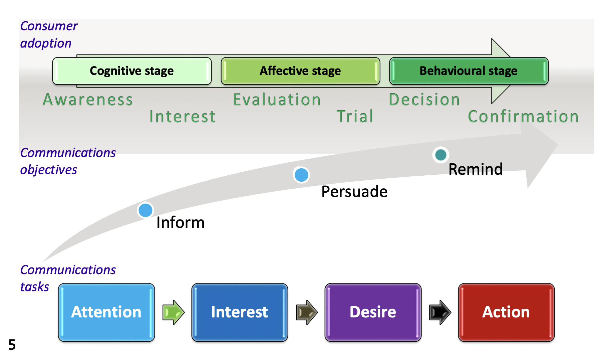
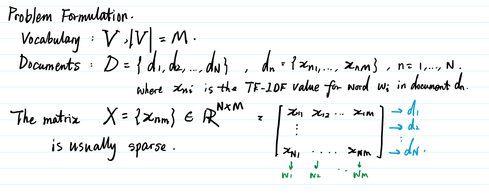
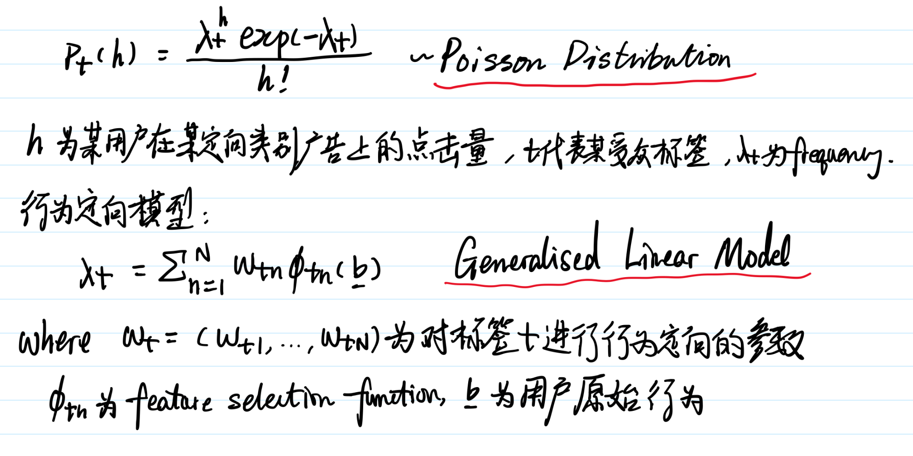
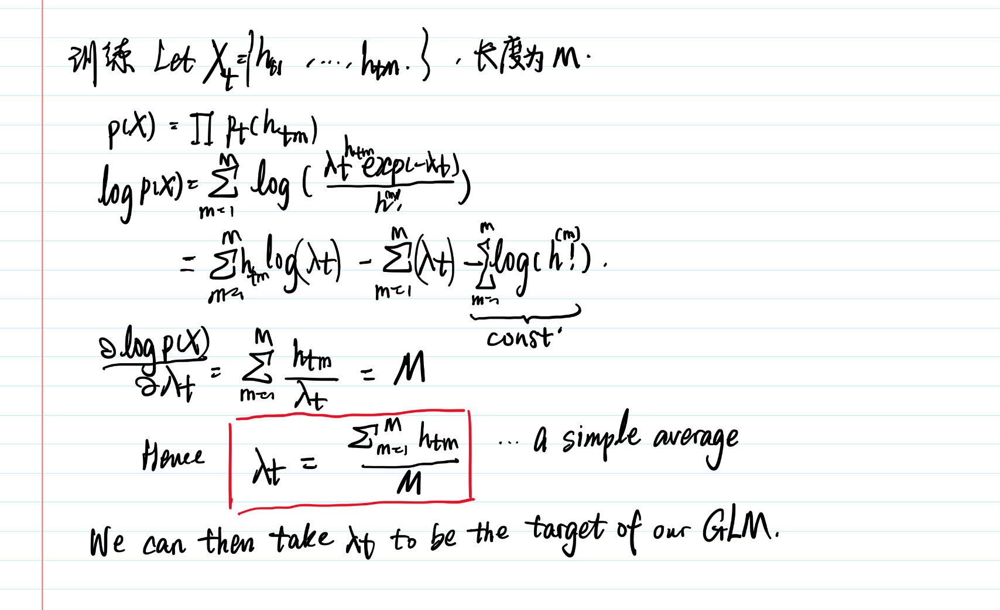
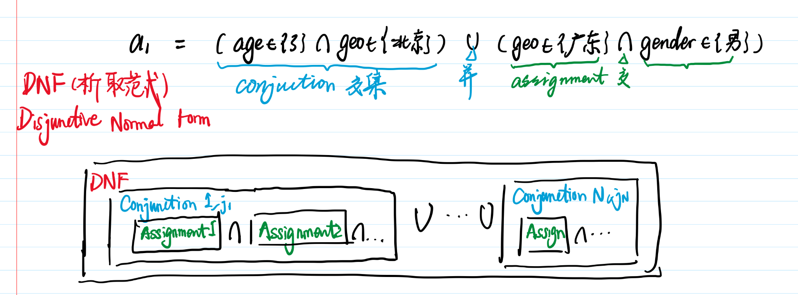

计算广告
计算广告基础
$广告有效性原理$


互联网广告的技术特点
- 技术和计算导向
- 效果的可衡量性（点击量）
- 创意和投放方式的标准化
- 视频广告的VAST标准和实时竞价的OpenRTB标准
- 媒体概念的多样化：媒体与转化行为的距离不同 - 需要不同的标准
- 接近购买的网站 - 转化率高，但吸引潜在用户能力小
- 数据驱动的投放决策
计算广告的核心问题
Find the best match between a given user in a given context and a suitable advertisement. - Andrei Broder
两点微调：
- 应对一组广告而非孤立的单个广告进行优化
- 系统不一定拥有用户的完整上下文
数学表达：$\max\sum_{i=1}^T (r_i-q_i)$. where $r_i$ is the revenue for the $i^{th}$ advertisement, $q_i$ is the cost for that advertisement. 当投入一致时，该标准即为投入产出比$ROI=\sum_i r_i / \sum_i q_i$.
广告优化问题(mathematical formulation for optimal advertising)：$$\max_{a_{1,…,T}}\sum_{i=1}^T r(a_i,u_i,c_i)-q(a_i,u_i,c_i)$$. where $a_i$ is the advertisement, $u_i$ is the user and $c_i$ is the context.
广告收入的分解
点击率(Click Through Rate CTR $=\frac{\text{广告点击}}{\text{广告展示}}$)
转化率(Conversion Rate CVR $=\frac{转化次数}{到达（广告主网页）次数}$)
广告收入分解：$eCPM = r(a,u,c) = \mu(a,u,c)\times \nu(a,u,c)$. where $\mu$ is click throgh rate （点击率）, $\nu$ is conversion rate （转化率）或点击价值（click value）
eCPM: effective cost per millie. 千次印象费用。一千次广告展示收取的费用。是最常用也最关健的定量评估收益的指标。
结算方式与eCPM估计的关系
几种主要计费模式：
- CPM结算，即千次展示结算。是视频广告结算的主流
- CPC结算，即按点击结算
- CPS (cost per sale)/CPA(cost per action)/ROI结算，即按照销售订单数，转化行为数或投入产出比结算
- CPT (cost per time)，针对大品牌广告主特定的广告活动，将某个广告位以独占方式交给某广告主，并按照独占的时间段收取费用。

在线广告产品概览

广告产品的三个主要组成部分：面对需求方的借口，面对供给方的借口，中间的投放过程和匹配策略。
搜索与竞价广告
搜索广告
搜索广告(paid search, search ad, sponsored search)一直是整个在线广告市场中市场份额最大的类型，更重要的是，像竞价、类搜索的广告投放架构都是从搜索广告发展起来的。

搜索广告是比较典型的竞价广告产品，其特点是广告主就某标的物（在这里是关键词）的广告展示机会展开拍卖式的竞争，并根据竞争结果依次占据该广告展示的若干位置。搜索广告创意的展示区域一般分为北（north）、东（east）、南（south）三个部分，如图所示：

计算广告技术概览
计算广告是一个典型的**个性化系统**，即根据用户，上下文的一些信息动态决定返回什么内容的系统。
个性化系统与搜索系统都是互联网时代具有挑战性的大规模计算问题。由于数据规模的要求，他们一般都采用检索（retrieval）加排序（ranking）这样类搜索的系统架构。个性化系统与搜索系统的主要差别在于大量的用户特征的使用，这一过程需要用到大规模的分布式数据处理平台，如Hadoop。初次之外，为了尽可能实时的利用线上数据，我们还会用到流计算平台来加工短时的个性化特征。将离线的分布式计算平台和在线的流计算平台相结合已经成为了这样的系统生成个性化特征的常用方案。
个性化系统框架

一般的个性化系统主要由四部分组成：
- 响应实时请求，完成决策的在线投放引擎（online serving）；
- 离线的分布式计算（distributed computing）数据处理平台；
- 用于在线实时反馈的流计算（stream computing）平台；
- 连接和转运以上三部分数据流的数据高速公路（data highway）

各类广告系统优化目标
$$\hat a_{1,…,T} = \arg\max_{a_{1,…,T}}\sum_{i=1}^T r(a_i,u_i,c_i)-q(a_i,u_i,c_i) = \arg\max_{a_{1,…,T}}\sum_{i=1}^T \mu(a_i,u_i,c_i)\times \nu(a_i,u_i,c_i)-q(a_i,u_i,c_i)$$
在广告系统中，每次展示的$r$都是由在线的投放引擎来决策的，而离线数据处理平台和流计算所做的都是为了准备$a_i,u_i,c_i$这三个变量或其组合的一些特征。

计算广告系统架构
广告投放引擎

- 广告投放机（ad server）：类搜索的投放机架构，通过倒排索引筛选再通过排序算法找到综合收益最高的若干个广告。最重要的指标是每秒查询数（Query per Second, QPS）以及广告决策的延迟（latency）
- 广告检索（ad retrival）:主要功能是在线时根据用户标签（user attributes）与页面标签（page attributes）从广告索引（ad index）中查找符合条件的广告候选。
- 广告排序（ad ranking）：在线高效计算广告的eCPM，并进行排序。eCPM的计算主要依赖于点击率估算，这需要用到离线计算得到的CTR模型和特征（CTR Model & Features），有时还会用到流计算得到的实时点击率特征（real-time features）
- 收益管理（yield management）：用这一部分来统一代表在各种广告系统中将局部广告排序的结果进一步调整，以全局收益最优为为目的进行调整的功能
- 广告请求接口
- 定制化用户划分（customized audience segmentation）：根据广告主的逻辑来划分用户群，从广告主处收集用户信息的产品接口
离线数据处理
计算广告最具挑战的算法问题大都集中在离线数据处理的部分，离线数据处理有两个输出目标：一是统计日志得到报表、dashboard等，供决策人进行决策时作为参考；而是利用数据挖掘、机器学习进行受众定向、点击率预估、分配策略规划等，为在线的机器决策提供支持。为了对大规模数据进行分布式的处理加工，我们一般会选用Hadoop这样的分布式存储和MapReduce计算框架。离线数据处理主要有下面几个主要模块：
- 用户会话日志生成：整理出以用户ID为键的统一存储格式，这样的日志被称为用户会话日志（session log）
- 行为定向（behavioral targeting）：这部分功能完成挖掘用户日志，根据日志中的行为给用户打上结构化标签库（structural label base）中的某些标签，并将结果存储在用户标签的在线缓存中，供广告投放机使用。这部分时计算广告的原材料加工厂
- 上下文定向（contextual targeting）：这部分包括半在线页面抓取（near-line page Fetcher）和上下文页面标签的缓存，与行为定向互相配合，负责给上下文页面打上标签，用于在线的广告投放中。
- 点击率建模（click modeling）：在分布式计算平台上训练得到点击率的模型参数和相应特征，加载到缓存中公线上投放系统决策时使用
- 分配规划（planning）：这部分为在线的收益管理模块提供服务，它根据广告系统全局优化的具体需求，利用离线日志数据进行规划，得到适合线上执行的分配方案（allocation plan）
- 商业智能（Business intelligence，BI）系统：这部分包括Extract-Transform-Load（ETL）过程、dashboard和cube，这些是所有以人为最终接口的数据处理和分析流程的总括，承担着对外信息交流的任务。
- 广告管理系统：这部分时广告操作者，即客户执行（Account Execute，AE）与广告系统的接口。一般来说，广告系统中只有这部分时面向用户的产品。
在线数据处理
在线数据处理基本上可以认为是离线数据处理对镜像功能，它是为了满足广告系统对实时数据反馈的要求，解决那些离线分布式计算平台无法快速响应的计算问题。我们经常选用流式管理平台作为基础设施。在线数据处理主要包括以下模块：
在线反作弊（anti-spam）：实时判断流量来源中是否有作弊流量，并且将这部分流量从计价和统计中去掉。这是所有后续在线处理必须经过的前置模块
计费（billing）：对于经过扣费预算耗尽的广告，系统必须马上通告广告索引系统将其下线。
在线行为反馈：包括实时受众定向（real-time targeting）和实时点击反馈（realtime click feedback）等部分。这部分时将短时内发生的用户行为和广告日志及时的加工成实时用户标签以及实时的点击率模型特征。
对于在线广告系统，这部分对于效果提升的意义重大；在很多情形下，把系统信息反馈调整做的更快比吧模型预测做得更准确效果更加显著。
实时索引（real-time indexing）：这部分的主要功能是实时接收广告投放数据，建立倒排索引。用于管理者快速调整线上广告索引。
合约广告核心技术
合约广告的重点形式是按指定受众购买的、按CPM计费的展示量合约广告。展示量合约广告的投送系统称为担保式投送系统。它依赖于受众定向、流量预测、点击率预测这三项基本技术，并采用在线分配的方式完成实时决策。本章主要解决在线分配问题，即在一组合约量的约束条件下，对每个在线到达的展示
广告排期系统

担保式投送系统
与展示量合约对应的广告系统称为担保式投送（Guranteed Delivery, GD）系统。

在此系统中，在线投放引擎接受用户出发的广告请求，根据用户标签和上下文标签找到可以匹配的广告合约，然后由在线分配模块决定本次展示投放哪个广告。完成决策后，将展示和点击日志送入数据高速公路。这些日志一方面进入离线分布式计算平台以后，通过日志的整理，完成合约的计划，即确定在线分配算法的参数，再将分配方案送到线上投放机使用；另一方面，日志也送到流计算平台，在反作弊和计价的基础上，再对索引进行快速调整。
流量预测
流量预测是一项支持技术，它对于在线分配的效果至关重要。它可以描述为：给定一组受众标签组合以及一个eCPM的阈值，估算在将来某个时间段内符合这些受众标签组合的条件、并且市场价在该eCPM阈值一下的广告展示量。
流量预测一般的方法是根据历史数据的统计来拟合未来的流量。工程哈桑的主要挑战在于，给定的受众标签组合可能性非常多，不可能将所有这些组合都预先做好统计。可行的思路是将其视为一个反向检索问题，主要包括以下几个步骤：
- 准备文档：将历史流量中，$(u,c)$上的所有标签的展示合并为一个供给节点$i$，并统计其总流量$s_i$以及这部分流量上eCPM的直方图hist。这样的每个供给节点作为流量预测反向索引的一篇文章
- 建立索引：对上一步生成的每个供给节点建立倒排索引，文档的terms即为此供给节点$(u,c)$上所有的标签。同时，在索引的正排表部分记录$s_i$和hist
- 查询结果：对一条输入的广告$a$，将其限定的标签条件作为查询，得到所有符合条件的供给节点的集合
- 估算流量：遍历上一步得到的每一个供给节点，对于某个供给节点$i$，首先计算其与该广告$a$的eCPM即$r(a,u_i,c_i)=\mu(a,u_i,c_i)$，然后根据相应的eCPM直方图hist计算a能获得的流量。

如何计算该广告$a$的eCPM？
频次控制（frequency capping）
频次，指的是某个用户在一段时间内看到某个或某组广告的曝光次数。一般来说，随着用户看到同一个创意频次多上升，点击率呈下降的趋势。广告主有时会要求控制某个用户接触到某创意的次数，以达到提高性价比的目的。

受众定向核心技术
受众定向技术分类
受众定向技术主要可以分为一下三种类型：
- 用户标签，$t(u)$形式的标签
- 上下文标签，$t(c)$形式的标签
- 定制化标签，$t(a,u)$形式的标签

上下文定向
上下文信息通常可以从广告请求的参数信息（地域定向，URL定向，操作系统定向）以及上下文页面的特征标签（关键词、主题、分类）等获得。其中，关键词提取是一项基础技术。通常可以使用TF-IDF较高词作为关键词，或使用由广告商描述所得的关键词表和IDF
确定了对上下文页面打标签的方法之后，在在线广告投放时，页面标签系统需要对广告投放机查询的某一个URL快速返回其对应的标签。复杂的打标签计算时不可能马上完成的，我们通常用一种半在线（near-line）的方式实现页面抓取和打标签的逻辑。
半在线抓取系统
系统用一个缓存（如Redis）来保存每一个URL对应的标签，当在线的广告请求到来时：1.如果该请求的URL在缓存中存在，那么直接返回其对应的标签 2.如果URL在服务中不存在，当时返回空的标签集合，同时立刻向后台的抓取队列中加入此URL 3.考虑到页面内容可能会不定时更新，可以设置缓存合适的TTL（Time to Live）以达到自动更新标签。
半在线的上下文抓取系统非常典型地解释了在线广告系统中“弱一致”的设计需求；只要保证大多数的广告决策最优正常，很少量的次优决策甚至时随机决策都是可以接受的。
文本主题挖掘
如果把页面视为一个文档，这就是文本主题模型（topic model）的研究问题。文本主题模型有两大类别：1. 预先定义好主题集合，用监督学习进行文档到主题的映射 2. 不预先定义主题集合，但控制主题的总个数或聚类程度，用非监督的方法自动学习出主题集合以及document-topic的映射函数。
我们将问题定义如下：

Latent Semantic Analysis (LSA)
Latent Semantic Analysis (LSA) 属于非监督方法。它的基本思路是对矩阵$X$进行奇异值分析（Singular Value Decomposition，SVD）这一过程可以表示为$X=(\alpha_1,…,\alpha_K)^T diag(s_1,…,s_K) (\beta_1,…,\beta_K)$. where $K$ is the rank of the matrix $X$. 通常使用$T\ll K$进行建模，即$X‘=(\alpha_1,…,\alpha_T)^T diag(s_1,…,s_T) (\beta_1,…,\beta_T)$,并且另其他singular value为0
PLSI Model and GaP Model
类似LSA的方法也可以通过概率建模，这就是Probabilistic Latent Semantic Indexing (PLSI)方法。

LDA Model
行为定向
归类为$t(u)$的受众定向方式都是根据用户的历史行为进行挖掘的问题，因此统称为行为定向（Behaviorial Targeting, BT）。行为定向需要有大量的数据挖掘。这个问题可以描述为，根据用户某一段时期内的各种网络行为，将该用户映射到某个定向标签上。
行为定向建模问题
行为定向的目标是找出在某个类型的广告上eCPM相对较高的人群。如果假设在该类型的广告上点击价值近似一致，那么问题就转化为找出在该类型广告上点击率较高的人群。我们可以建模如下：

我们需要比较$\lambda_t$来确定最“适合”某用户的广告标签$t$. 我们主要考虑两个方面的问题：1. 特征函数$\phi_{tn}$的选择以及 2.对应模型的训练集的组织和生成
Note that this is a regression problem with discrete labels as inputs. GLM is one way but we can certainly use deep learning methods for regression.
训练方法如下：

行为定向特征生成
最常用的特征选择函数是将一段时间内的原始用户行为映射到确定的标签体系上，如下图所示：

将不同行为打上标签的方法如下图所示：

我们需要忽略久远的用户行为，通常有两种方法：滑动窗口法（sliding window）和时间衰减法（exponential smoothing）。图例如下：

Sliding window: $\tilde x(d) = \sum_{\delta=0}^D x(d-\delta)$
Exponential smoothing: $\tilde x(d) = \alpha \tilde x(d-1)+x(d)$
工程上一般使用时间和空间复杂度都较低的时间衰减法
为了消除工作日休息日的周期性影响，时间片长度通常为7的整数。某个用户因此会对应多个样本（$h_t^{(m)},m=1,…,M$）。注意时间片长度越短，$M$越大
行为定向的决策
在行为定向的决策过程中，只需要计算线性函数$\lambda$的值，再根据预先确定的阈值来确定某个用户是否应该被打上某个定向标签。这一过程比训练简单的多。
行为定向的评测
一般来说，行为定向可以通过reach/CTR曲线来进行半定量的评测。我们可以通过控制$\lambda$的阈值来控制某个标签人群的量。在正常情况下，较小的人群规模应该较为精准，即对该类型广告的CTR较高；随着人群规模的扩大，该CTR也会逐渐走低。我们把标签接触到的人群规模称为reach，而reach与CTR构成的曲线是评价该标签上的定向是否合理，以及效果如何的重要依据。

该曲线的斜率越大，往往表示定向模型的鉴别力越强。由于实际中一般会将阈值设得较高，从而达到较好的定向效果，因此往往只需要关注该曲线头部的部分即可。
竞价广告核心技术
竞价交易是整个在线广告市场最关键的一次产品进化，同时也带来了广告技术的迅速发展。在竞价广告中，大量中小广告主的检索规模是竞价广告系统要解决的关键问题。我们将结合广告检索的具体需求，具体讨论布尔表达式检索与相关性检索这两个场景下的算法思路。
另外，竞价广告需要对给定的$(a,u,c)$组合上的eCPM做尽可能准确的估计，由于大量中小广告主的参与，广告系统对eCPM的估计往往面临样本不足的情形。与此相关的点击率预测和探索与利用两个问题所涉及的技术是竞价广告系统通用的关键技术。点击率预测是广告系统中最重要的机器学习问题之一，由于面对的数据量巨大，如何高效地设计算法以减少迭代是优化中要考虑的关键。另外，结合广告业务的特点设计有效的特征，让点击率模型快速捕捉用户兴趣的动态信号是提高点击率预测效果的关键。
在搜索广告中，竞价标的即关键词的颗粒度很细。因此查询扩展问题至关重要。查询扩展可以看成是一个关键词推荐问题，但也需要考虑一些与广告领域相关的特点。
查询扩展
查询拓展有三种主要的思路：1.基于推荐 2.基于主题模型 3.基于历史效果
- 基于推荐：主要是使用协同过滤（Collaborative Filtering），根据用户的会话和关键词交互强度矩阵获得词向量
- 基于主题模型：基于语义分析获得词向量。由于考虑的不是用户意图上的相关性，效果一般弱于推荐算法
- 基于历史效果：如果从历史数据中发现，某些关键词对特定广告主的eCPM较高，那么应该将这些效果较好的查询租结果记录下来，作为前面两种方法的补充
广告检索
广告检索系统有一些自身的特点和需求，基本的倒排索引技术在广告检索中遇到了两个新问题：
- 广告的定向条件组合可以看成是一个由与或关系连接的布尔表达式，这样的文档显然与搜索引擎面对的BoW文档不太一样
- 在上下文关键词或用户标签比较丰富时，广告检索中的查询（query）可能相当长，这与搜索引擎中主要由1～4个关键词组成的查询有很大的区别
布尔表达式的检索
原论文在这里，其中也包含了提供相关性搜索的算法。
在受众定向的售卖方式下，一条广告文档不能再被看成是BoW，而是一些定向条件组合成的布尔表达式，举例如下：

这些boolean expression被写成了析取范式（Disjunctive Normal Form, DNF）的形式。
- 每个DNF都可以被分解成一个或多个交集的并（conjunction）
- 每个交集又可以进一步分解为一个或多个赋值集（assignment）的交

当某个广告请求的定向标签满足某个Conjunction时，一定满足包含该Conjunction的所有广告，这说明只要对Conjunction建立倒排索引，并加上一层Conjunction->Ad的辅助索引即可。另外，当sizeof(query)<sizeof(Conjuction)时，该Conjuction一定不满足该请求
若$conj_1 = (age\in{3}\cap geo\in{北京})$，$query=(geo\in{北京})$，$conj_1$ does not match the query
相关性检索
在长查询的检索情形下，我们实际上希望的是查询与广告候选间的相似程度尽可能高，但任何一个关键词是否出现在文档中其实都不关键。这样以查询和文档间的相似程度为目标的检索问题称为相关性检索。
解决相关性检索的基本思路是在检索阶段就引入某种评价函数，并以此函数的评价结果决定返回哪些候选。评价函数的评价有两个要求：
- 合理性，即与最终排序时使用的评价函数近似
- 高效性，即需要在检索阶段实现快速评价算法，否则就与在排序阶段对每个候选分别计算没有差别了
研究表明，当选用线性评价函数（变量为各标签或关键词）且各权重为正时，快速检索效果最好。公式为：$score(a,c) = \sum_{t\in F(a)\cap F(c)}\alpha_t v_t(a)$. 其中$F(a)$和$F(c)$分别表示广告文档$a$和上下文特征$c$上不为零的特征集合，比如查询中的关键词。而$v_t(a)$表示$t$这一特征在$a$广告上的贡献值（如TF-IDF值）。
我们可以利用线性评价函数的两个上界加速评价过程。利用某个关键词$t$在所有文档上贡献值的上界，记为$u_t$；二是某个文档中所有关键词的上界的和，这实际上是该文档对当前查询评价函数的上界，记为$U_a$。利用这两个上界排除掉不可能胜出的候选被称为WAND (Weak AND)算法。
关于WAND算法的具体内容可以参考另一篇笔记。
点击率预测
广告点击率预测的目的是广告排序，但不能套用搜索里的排序问题，因为点击率需要乘以单价才能得到最后的排序。另外，我们需要准确地预测eCPM用于出价。因此，作为各种广告系统中的一项通用技术，点击率预测更适合被建模成回归问题而不是排序问题。
点击率预测模型
点击率预测模型是在$(a,u,c)$组合与点击的概率$\mu$之间建立函数关系，我们可以考虑的基础模型是逻辑回归（Logistic Regression, LR）$p(h|a,u,c) = \sigma((2h-1)w^Tx(a,u,c))$, where $\sigma(\cdot)$ is the sigmoid function, $w$ is the weight vector to be trained and $x(a,u,c)$ is the feature vector.
CTR is usually small (fraction of thousands), it should affect the learning rate of the model (low gradient) (?)
点击率模型的特征
点击率预测问题的主要挑战在于如何使模型捕捉高度动态的市场信号，以达到更准确预测的目的。这一挑战可以使用在线的模型学习算法，或者快速更新的动态特征来解决。从方法论上说， 这两种思路是对偶的，但我们将重点放在第二种思路上，因为其工程扩展上方便一些。
静态特征
在$(a,u,c)$这三个维度上存在着人为指定或机器生成的多种标签，这些标签有的相互独立，也有的存在一定的层级关系。由于组合特征的存在，对应的模型为度也非常高。直接生成所有可能的单维度特征和组合特征，选取出现频次在一定阈值以上的，将其作为LR模型的特征集合。这种特征我们称为静态特征。显然，惊太特征都是取值为0或1的特征
动态特征
在机器学习问题中，某项模型测的技术，一般都可以找到特征侧的对偶方案。当某个组合特征被触发时，我们不再用1，而是采用这个组合历史上一段时间的点击率作为其特征取值。这样一来，即是是同一个$t(a,u,c)$,在不同的时间点其特征取值也是不同的。这可以被理解为组合模型（canonical model）。
使用动态特征的另一个好处是可以大大减少模型的参数数目

位置偏差和CoEC
使用动态特征的一个实际上的困难是非定向因素（广告位位置，广告位类型，创意类型，操作系统等）对点击率的影响。这些都与广告决策有关但是远远超出了定向技术考虑的范围。
我们可以训练一个偏差模型（bias model）来修正这一偏差。偏差模型输出的是期望点击（expected click），它评估的是在广告质量完全随机的情况下，广告位或其他属性对应的平均点击率。训练bias model时，我们只使用偏差因素作为特征。这些特征一般与广告$a$无关。
我们可以用训练出来的模型对点击率进行归一化（normalization）$CoEC=\frac{\sum_i h_i}{\sum_i \mu_{bias}(u_i,c_i)}$. 这一指标是点击与期望点击的比值Click On Expected Click (CoEC). 这一指标可以更准确地表征某部分流量上广告投放的实际点击率水平，也比较适用于点击反馈这样的动态特征。
常见的偏差特征包括：
- 广告位位置
- 广告位尺寸
- 广告投放延迟
- 日期和时间
- 浏览器
点击反馈的平滑
用CTR或者CoEC这样的点击反馈作为动态特征，我们需要平滑地统计这些值。一般可以通过加入Bayesian prior的方式如下：
Jinghong Chen @2021-2022